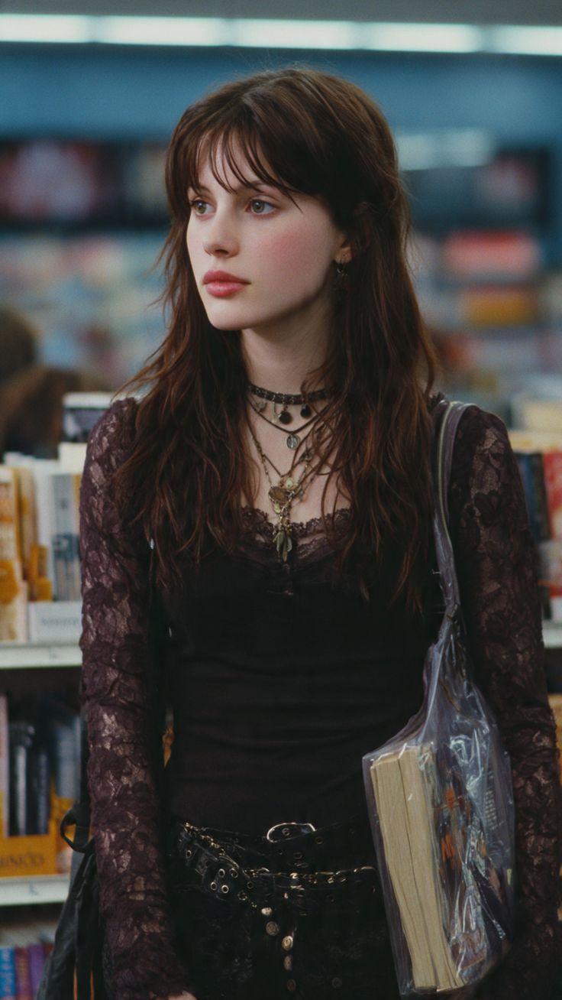
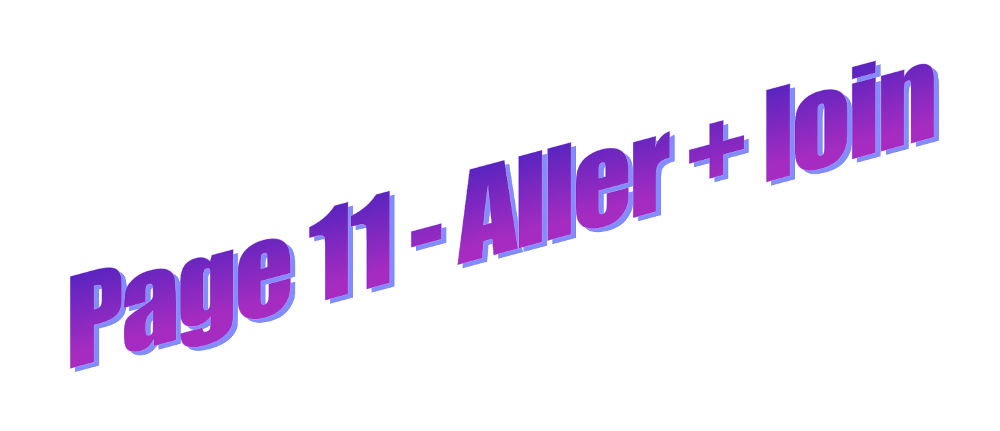
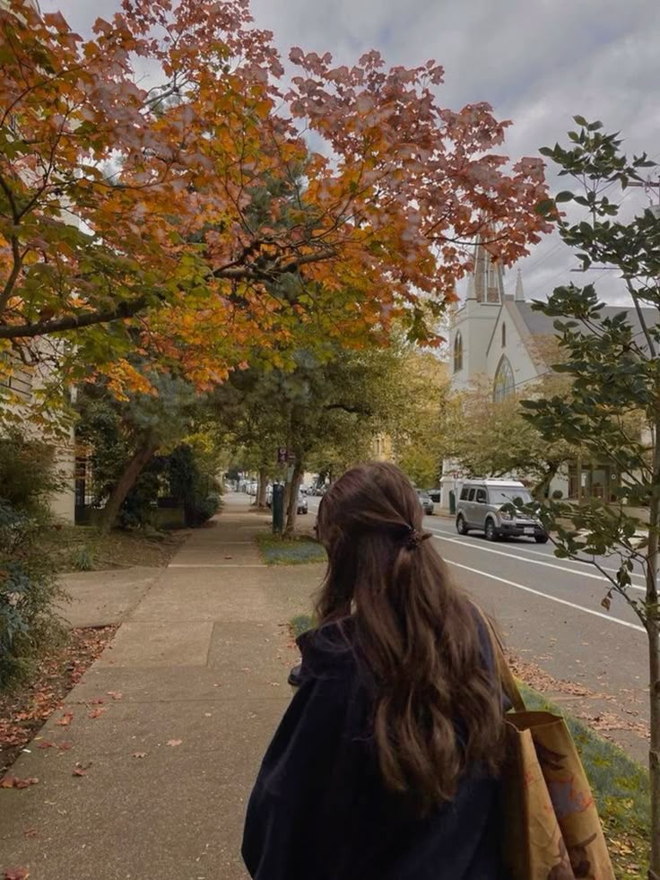

La vendeuse ne réagit pas immédiatement. Elle baisse la tête, comme si elle classait déjà ta réponse ailleurs que dans le langage. Puis elle reprend un livre sur l’étagère sans te regarder.« Je vois. »
Sa voix est neutre, et ça te perturbe. Tu attends une suite, un signe, une nuance…
Rien ne vient.
Emma t’appelle un peu plus loin, déjà absorbée par un autre titre. Aude glisse un encens hors de prix dans son sac. Soline tripote les dream-catchers d’un air songeur. La boutique reprend son rythme normal.
La vendeuse passe près de toi sans te regarder.
« Bonne continuation. »
Plus tard, dehors, l’air te paraît légèrement plus froid qu’en entrant. Tu ne sais pas si quelque chose a changé, ou si c’était seulement toi qui avais cru que quelque chose pouvait changer.
Page 9 : tu prends le bus pour rentrer chez toi.
